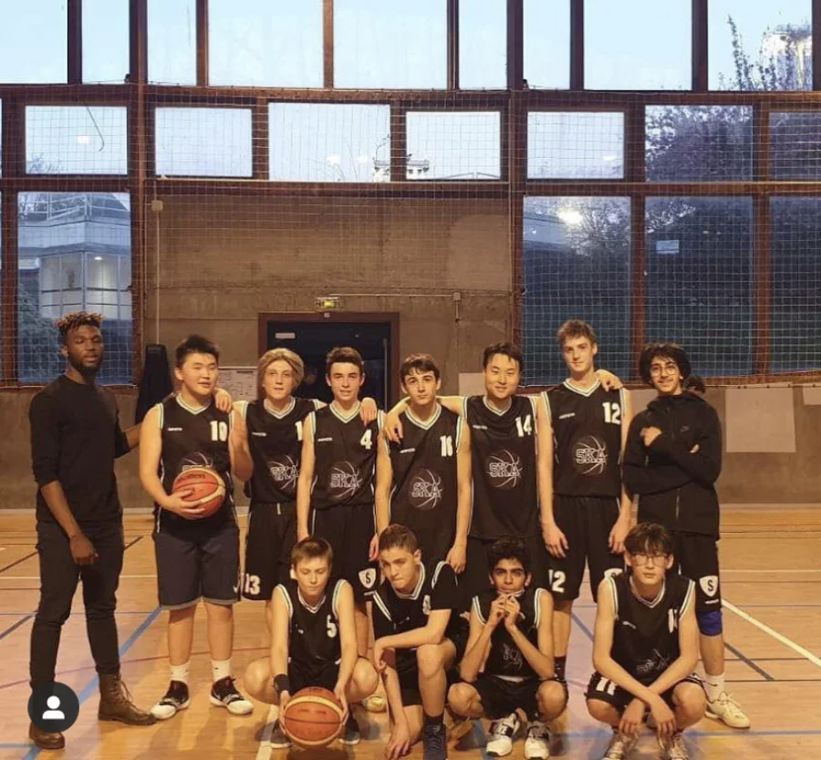

Team Sports
Club basketball · 2017—2022
Making progress as a team
I enjoy almost every team sport and continued playing basketball recreationally after five years in a club. What matters most to me is not simply performing well individually, but helping the group improve together.
When teammates are less experienced or find it difficult to enter the game, I take time to explain, encourage, and help them build confidence. I would rather create the conditions to win together than leave someone on the margins of the team.